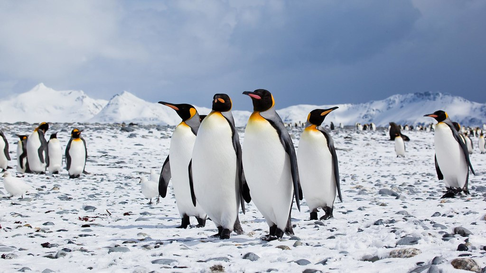
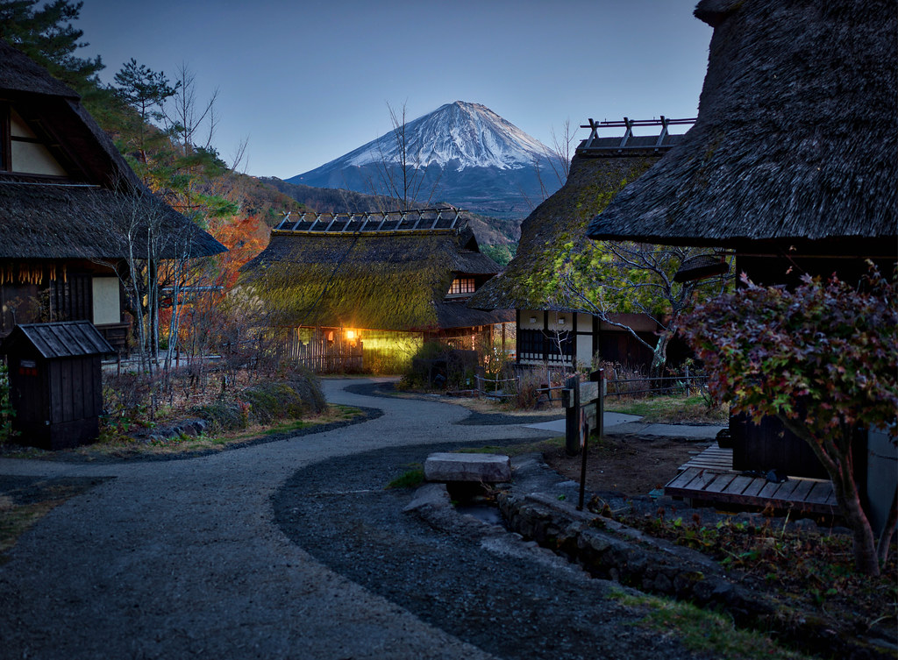

Nature Photos
This page will showcase some of the most beautiful images nature and the internet have to offer
penguins

image:"penguin group small" by Antarctica Bound, CC BY-ND 2.0
Mount Fuji

image:"Mt. Fuji" by Trey Ratcliff, CC BY-NC-SA 2.0